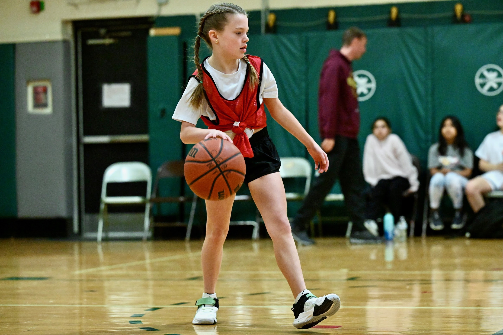
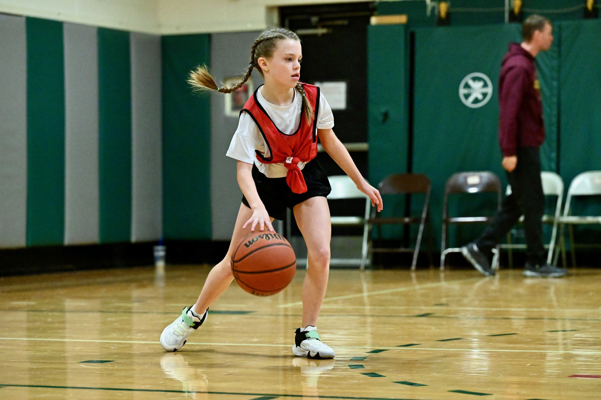
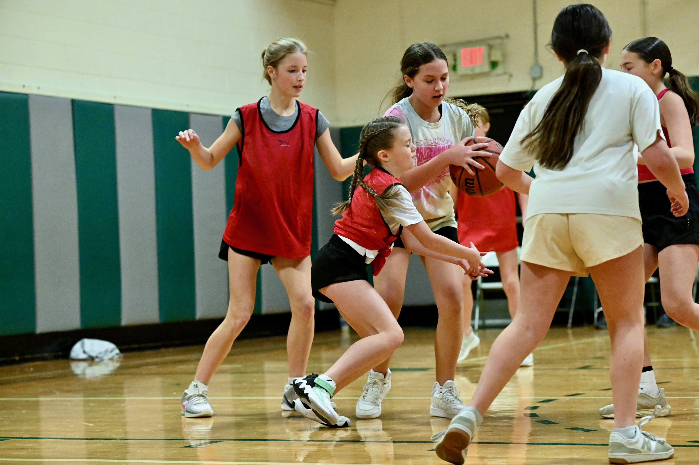
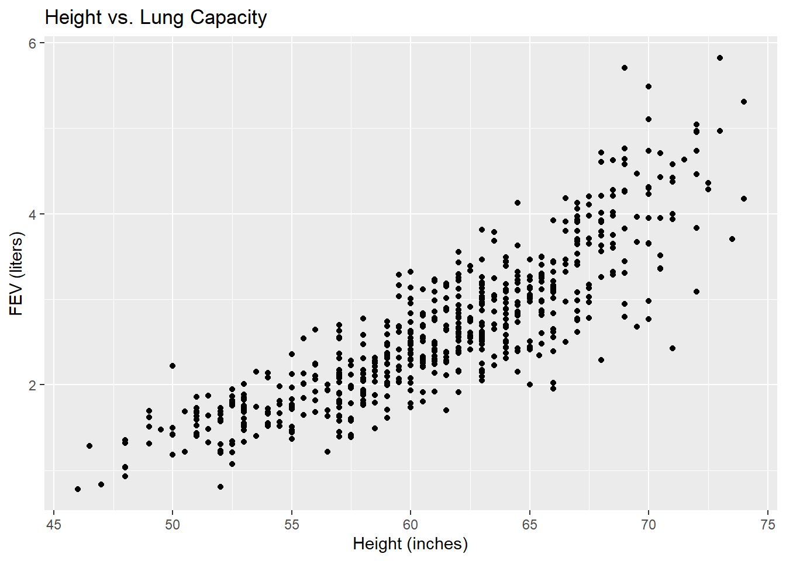

Lesson 30 - Course Review
Lesson Administration
Calendar
Day 1

Day 2


Army Math Basketball
Math vs USMAPS
Previously 3-1
4-1

Math vs USMAPS
Previously 4-1
5-1
Math vs Garrison
Previously 5-1
5-1
Math vs Garrison
Previously 5-1
6-1
Army Math Volleyball
Math vs EECS
Previously 2-0
3-0

Math vs EECS
Previously 3-0
4-0
Reese




TEE Schedule
| Date | Start | End |
|---|---|---|
| Wed, 17 Dec 2025 | 0730 | 1100 |
| Wed, 17 Dec 2025 | 1300 | 1630 |
| Thu, 18 Dec 2025 | 0730 | 1100 |
TEE Room Chaos!
TH322, TH323, TH324
G1
Wed, 17 Dec (1300-1630)
- Afari-Aikins, John
- Coldren, Nathan
- Conti, Annabella
- Freeman, Brandon
- George, Joshua
- Goetz, Charles
Wed, 17 Dec (1300-1630)
- Lavery, Harrison
- McDaniel, Jack
- McDonnell, Hunter
Wed, 17 Dec (1300-1630)
- McKillop, John
- Meers, Tehya
- Midberry, James
Wed, 17 Dec (1300-1630)
- Minicozzi, John
- Noack, Macoy
Thu, 18 Dec (0730-1100): TH321
- Din, Jenna
- Gupta, Aarav
- Lawrence, Karina
H1
Wed, 17 Dec (0730-1100): BH 171A
- Zagame, Samuel
Wed, 17 Dec (1300-1630)
- Arengo, Mary
- Chambers, Cherokee
- Dohl, Chad
- Hudson-Odoi, Vanessa
- Kinkead, Lucas
- Records, Benjamin
- Shelton, Sawyer
- Stockbower, Tatiana
- Thanepohn, Trevor
- Walter, Benjamin
- Wills, Liam
- Wint, Logan
Thu, 18 Dec (0730-1100): TH321
- Chau, Paul
- Johnson, Joseph
- Rubio, Andrew
- Sager, Campbell
- Vann, Nehemiah
I1
Wed, 17 Dec (1300-1630)
- Aguilar Winchell, Benjamin
- Ahn, David
- Andrade, Elena
- Bettencourt, Jacob
- Bhutani, Dillon
- Campbell, Evan
- Forgues, Barbara
- Jo, Alex
- Lanham, Logan
- Maan, Bahawal
- Schwartz, Joseph
- Sindler, Allan
- Tahmazian, Isabela
- Wamre, Gabrielle
Thu, 18 Dec (0730-1100): TH321
- Helmkamp, Braeden
- Ogordi, Daniel
- Park, Sangwoo
- Smith, Gennaro
I2
Wed, 17 Dec (1300-1630)
- Ardisana, James
- Bachmann, Christian
- Barksdale, Jordon
- Barvitskie, Mason
- Corbett, Chas
- Davidson, Justin
- Groebner, Samuel
- Harris, Parker
- Kim, Danny
- Mantell, Jack
- McKane, Angelina
- Nguyen, Ta
- Oxendine, Jake
- Patterson, Alyssa
- Speaks, Brennan
Thu, 18 Dec (0730-1100): TH321
- Arterberry, Myles
- McPherson, Paige
- Williams, Caleb
TEE Overview
TEE Admin
Authorized Resources:
- Your computer with access to a blank RStudio document (.R, .rmd, or .qmd tab)
- Course Guide
- Tidyverse Tutorial
- Two pages (front and back) of personally handwritten notes
- Issued calculator
Unauthorized Resources:
- Internet
- Generative AI
- Textbook
- Course applets
- Email or other electronic communications
- Music devices
- Friends / Instructor
Important Reminders:
- Show enough work to logically present your thought process (R code or equations) - demonstrate mastery of course material, not simply a correct answer
- Prepare RStudio by clicking the broom button in “History,” “Environment,” and “Plots” panes; use CTRL+L to clear the Console
- Academic security: Do not discuss content until released on 19 December @ 1630
Advice:
- Don’t just put down an answer - show how you got to that answer even if you used R/calculator
- You’ve been taught everything on this exam!
Course Review - Non Exhaustive List of Topics
Probability Rules
- Addition Rule: \(P(A \cup B) = P(A) + P(B) - P(A \cap B)\)
- Multiplication Rule: \(P(A \cap B) = P(A) \cdot P(B|A)\)
- Complement Rule: \(P(A^c) = 1 - P(A)\)
- Conditional Probability: \(P(A|B) = \frac{P(A \cap B)}{P(B)}\)
- Bayes’ Theorem: \(P(A|B) = \frac{P(B|A) \cdot P(A)}{P(B)}\)
- Mutually Exclusive: \(P(A \cap B) = 0\), so \(P(A \cup B) = P(A) + P(B)\)
- Independence: \(P(A|B) = P(A)\), so \(P(A \cap B) = P(A) \cdot P(B)\)
Study Design & Data
- Identify observational units in a study
- Recognize variable types (categorical vs quantitative)
- Distinguish between observational study and experimental study
- Identify confounding variables
- Know sampling methods (convenience sample, random sample, etc.)
- Choose appropriate plot types based on variable type:
- Categorical: bar graph
- Quantitative: histogram, dot plot, box plot
Parameters vs Statistics
- Know the difference between parameter (population) and statistic (sample)
- Know when we can claim causality (random assignment)
- Know when we can claim generalization (random sampling)
Random Variables & Distributions
- Know when to use PMF, PDF, and CDF for discrete and continuous variables
- Calculate probabilities using PMF (discrete) and PDF (continuous)
- Go from PDF to CDF for continuous random variables to include piecewise PDFs (integration)
- Calculate expected value \(E(X)\), variance \(Var(X)\), and standard deviation \(SD(X)\)
- Apply linear transformation rules: \(E(aX + b) = aE(X) + b\) and \(Var(aX + b) = a^2 Var(X)\)
Hypothesis Testing
Know when to use each test, validity conditions, and how to execute:
| Test | When to Use |
|---|---|
| One-proportion z-test | One categorical variable, testing proportion against a value |
| One-sample t-test | One quantitative variable, testing mean against a value |
| Two-proportion z-test | Comparing proportions between two groups |
| Two-sample t-test | Comparing means between two independent groups |
| Paired t-test | Comparing means for paired/matched data |
- Write null and alternative hypotheses (symbols and words)
- Check validity conditions
- Calculate statistic, standardized statistic, and p-value
- Interpret p-value (probability of observing data at least as extreme, given null is true)
- Draw conclusions comparing p-value to significance level
- Know when to use z-distribution vs t-distribution:
- z: proportions (known population standard deviation)
- t: means (unknown population standard deviation, using sample SD)
Confidence Intervals
- Interpret confidence intervals correctly
- Calculate margin of error (half the width of CI)
- Determine if a value is plausible based on CI
Linear Regression
- Describe scatterplot characteristics: direction, form, strength of association
- Execute simple and multiple linear regression with data
- Interpret coefficients for continuous variables (“for each 1-unit increase…”)
- Interpret coefficients for categorical variables (“compared to the reference group…”)
- Interpret coefficients “after controlling for” or “after accounting for” other variables
- Interpret interaction terms
- Compare models using p-values and \(R^2\)
- Assess statistical significance of coefficients
In-Class Examples
Example 1
Researchers studied where people stop when approaching a stop sign. Do people have a preference for stopping position, or do they choose randomly between stopping as a single car, following another car, or leading a group?
Stop <- ma206data::chap8_Stop
head(Stop)# A tibble: 6 × 1
position_stop
<chr>
1 single
2 single
3 single
4 single
5 single
6 single table(Stop)position_stop
follow lead single
98 42 176 Step 1: Set up hypotheses
If people had no preference, they would choose each position with equal probability (1/3).
\(H_0: p = 1/3\) (no preference - people choose “single” at the same rate as random chance)
\(H_a: p > 1/3\) (people prefer to stop as a single car)
Step 2: Calculate the statistic
# Count successes (single) and total
n <- nrow(Stop)
x <- sum(Stop$position_stop == "single")
p_hat <- x / n
cat("n =", n, "\n")n = 316 cat("x (single) =", x, "\n")x (single) = 176 cat("p-hat =", round(p_hat, 3), "\n")p-hat = 0.557 Step 3: Conduct the test
\[z = \frac{\hat{p} - p_0}{\sqrt{\frac{p_0(1-p_0)}{n}}}\]
# Null hypothesis value
p_0 <- 1/3
# Standard error under the null
SE <- sqrt(p_0 * (1 - p_0) / n)
# Standardized statistic (z-score)
z <- (p_hat - p_0) / SE
cat("Standard Error =", round(SE, 4), "\n")Standard Error = 0.0265 cat("z =", round(z, 3), "\n")z = 8.433 # p-value (one-sided, greater than)
p_value <- 1 - pnorm(z)
cat("p-value =", round(p_value, 4), "\n")p-value = 0 Step 4: Confidence Interval
\[\hat{p} \pm z^* \sqrt{\frac{\hat{p}(1-\hat{p})}{n}}\]
# For CI, use standard error based on p-hat (not p_0)
SE_ci <- sqrt(p_hat * (1 - p_hat) / n)
# 90% CI (for alpha = 0.10)
z_star <- qnorm(0.95) # one-sided, so 0.95
CI_lower <- p_hat - z_star * SE_ci
CI_upper <- p_hat + z_star * SE_ci
cat("90% CI: (", round(CI_lower, 3), ",", round(CI_upper, 3), ")\n")90% CI: ( 0.511 , 0.603 )Step 5: Draw conclusion
Compare p-value to significance level and state conclusion in context.
Example 2: Multiple Linear Regression with Interaction
Researchers want to understand factors that affect lung capacity (FEV - Forced Expiratory Volume). They collected data on age, height, gender, and smoking status.
FEV <- ma206data::fev
head(FEV)# A tibble: 6 × 5
Age FEV Height Gender Smoker
<dbl> <dbl> <dbl> <chr> <chr>
1 11 3.90 67 Female no
2 11 3.98 68.5 Male no
3 8 2.17 57 Male no
4 11 3.74 68 Male no
5 11 2.94 63 Female no
6 15 2.73 63 Female no Part A: Scatterplot
ggplot(FEV, aes(x = Height, y = FEV)) +
geom_point() +
labs(x = "Height (inches)", y = "FEV (liters)",
title = "Height vs. Lung Capacity")
Lets talk association direction, form, and strength:
Direction:
Form:
Strength:
Part B: Multiple Linear Regression (No Interaction)
model1 <- lm(FEV ~ Height + Age + Smoker, data = FEV)
summary(model1)
Call:
lm(formula = FEV ~ Height + Age + Smoker, data = FEV)
Residuals:
Min 1Q Median 3Q Max
-1.5349 -0.2903 -0.0146 0.2812 1.9197
Coefficients:
Estimate Std. Error t value Pr(>|t|)
(Intercept) -4.77287 0.24718 -19.309 < 2e-16 ***
Height 0.11288 0.00520 21.707 < 2e-16 ***
Age 0.05142 0.01049 4.900 1.24e-06 ***
Smokeryes -0.13031 0.06685 -1.949 0.0517 .
---
Signif. codes: 0 '***' 0.001 '**' 0.01 '*' 0.05 '.' 0.1 ' ' 1
Residual standard error: 0.4422 on 589 degrees of freedom
Multiple R-squared: 0.7466, Adjusted R-squared: 0.7454
F-statistic: 578.6 on 3 and 589 DF, p-value: < 2.2e-16Interpretation of Height coefficient:
After controlling for Age and Smoker status, for each additional inch of height, FEV increases by approximately ___ liters, on average.
Interpretation of Smoker coefficient:
After controlling for Height and Age, smokers have an FEV that is approximately ___ liters [higher/lower] than non-smokers, on average.
Is Height statistically significant at \(\alpha = 0.10\)?
Look at p-value for Height coefficient.
Part C: Multiple Linear Regression (With Interaction)
model2 <- lm(FEV ~ Height * Smoker + Age, data = FEV)
summary(model2)
Call:
lm(formula = FEV ~ Height * Smoker + Age, data = FEV)
Residuals:
Min 1Q Median 3Q Max
-1.51896 -0.28187 -0.01598 0.27434 1.92389
Coefficients:
Estimate Std. Error t value Pr(>|t|)
(Intercept) -4.603951 0.252466 -18.236 < 2e-16 ***
Height 0.109355 0.005309 20.599 < 2e-16 ***
Smokeryes -3.781015 1.261569 -2.997 0.00284 **
Age 0.056087 0.010552 5.315 1.51e-07 ***
Height:Smokeryes 0.055393 0.019115 2.898 0.00390 **
---
Signif. codes: 0 '***' 0.001 '**' 0.01 '*' 0.05 '.' 0.1 ' ' 1
Residual standard error: 0.4395 on 588 degrees of freedom
Multiple R-squared: 0.7502, Adjusted R-squared: 0.7485
F-statistic: 441.5 on 4 and 588 DF, p-value: < 2.2e-16Does smoking status change the association between Height and FEV?
Look at the p-value for the interaction term (Height:Smokeryes). If p-value < \(\alpha\), then yes, the relationship between Height and FEV differs for smokers vs non-smokers.
Part D: Model Comparison
Which model would you recommend?
| Model | R-squared | Key p-values |
|---|---|---|
| Model 1 (no interaction) | ___ | |
| Model 2 (with interaction) | ___ | Interaction p-value: ___ |
Recommendation: If the interaction term is not significant, prefer the simpler model (Model 1). If significant, the interaction model (Model 2) better captures the relationship.
Exam Preparation
Thank You
Thank you for a great semester in MA206! Good luck on your TEE and future endeavors.
Before you leave
Today:
- Any questions for me?
- Course evaluations